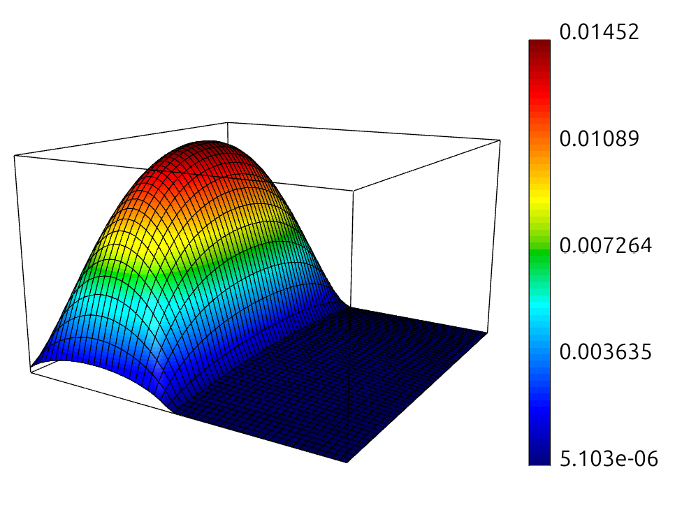
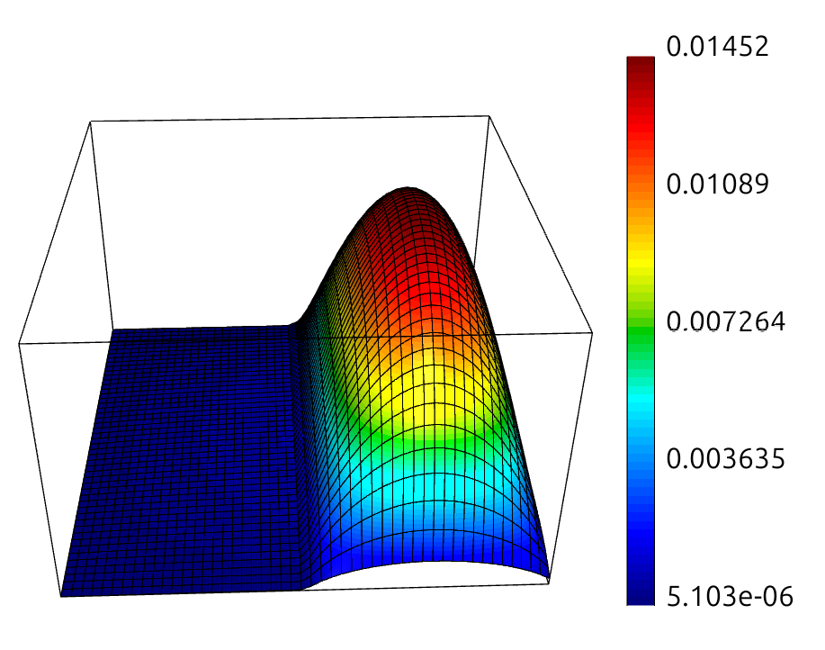
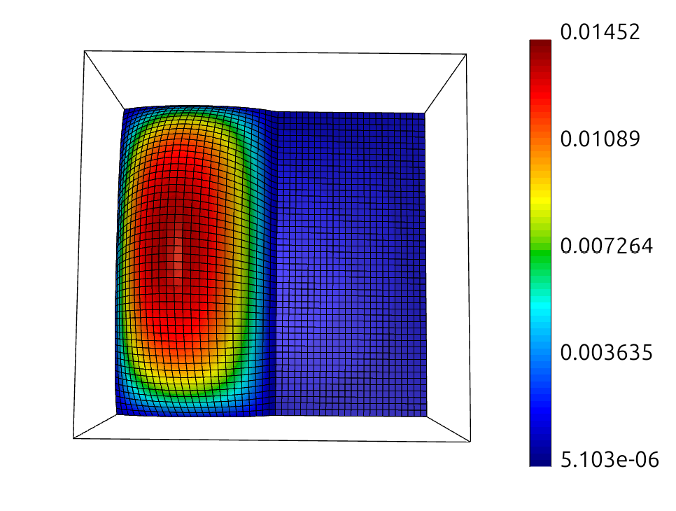

Numerical simulation in the automotive industry is evolving beyond simple geometries. As we move toward complex multi-material battery enclosures—combining high-conductivity Aluminum plates with insulating Carbon Fiber Reinforced Polymers (CFRP)—the underlying math becomes "stiff." This stiffness pushes traditional IEEE 754 floating-point arithmetic to its breaking point.
In this study, we benchmarked the UTTUNGA board, a RISC-V platform utilizing Posit arithmetic, against a standard x86 baseline. We utilized the HYPRE BoomerAMG algebraic multigrid solver to navigate a numerically brutal thermal interface problem.
The core of this simulation is the variable-coefficient Poisson equation:
The internal heat source, $f(x)$, represents real-world volumetric generation such as Joule heating from electrical busbars or exothermic chemical reactions within battery cells. To handle the interface between these materials, we implemented the Harmonic Mean logic to calculate jump coefficients:
To validate the physics, we used GLVis to generate temperature surface plots. These visualizations clearly show the non-uniform response: the Aluminum acts as a flat heat sink, while the Carbon Fiber traps heat in a massive "thermal dome".



While the physics made sense, the hardware results told a different story. When pushing for extreme precision (tolerances of $10^{-13}$ to $10^{-15}$), the standard x86 baseline failed catastrophically. The rounding noise at the interface "cliff" caused the residual to explode to $1.26 \times 10^4$.
The UTTUNGA board, utilizing Posit arithmetic, handled the same stiff matrix with clinical stability. Because Posits provide increased precision bits in the "golden zone" around 1.0, the BoomerAMG V-cycles remained mathematically consistent.
| Grid Size ($n$) | Tolerance | Platform | Iterations | Final Residual |
|---|---|---|---|---|
| 50 | 10-15 | UTTUNGA | 14 | 3.99e-15 |
| 100 | 10-15 | UTTUNGA | 15 | 4.45e-15 |
| 50/100 | 10-14 | x86_64 | Diverged | 1.26e+04 |
This study demonstrates that the numerical foundations of our hardware directly impact our ability to simulate safe automotive structures. While x86 legacy math loses the signal at material interfaces, the UTTUNGA board maintains the precision necessary for high-fidelity safety margins. For industry leaders like Tata Motors, this board represents the difference between a failed solver and a successful thermal runaway simulation.